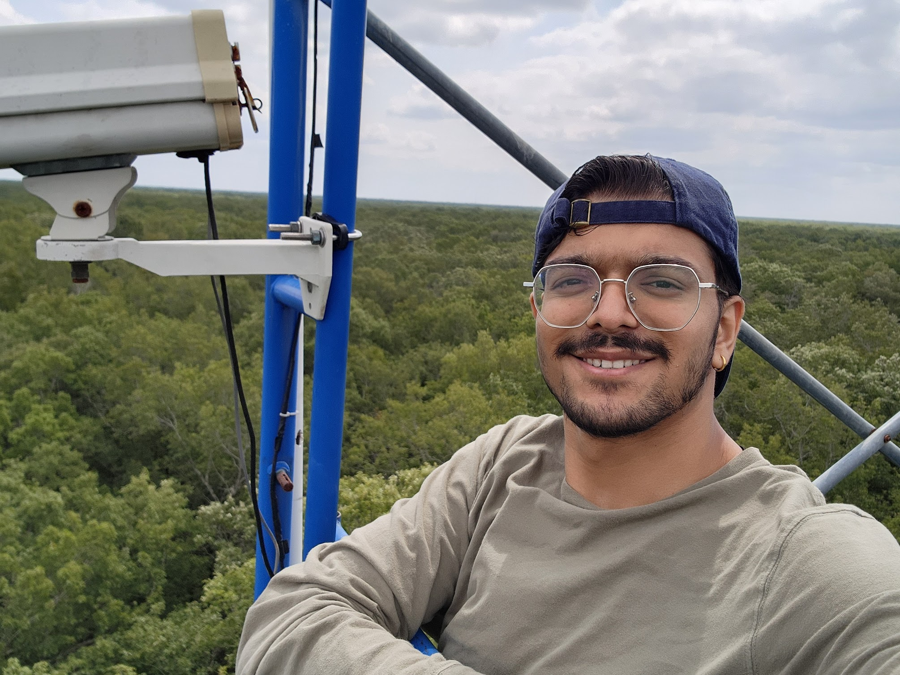
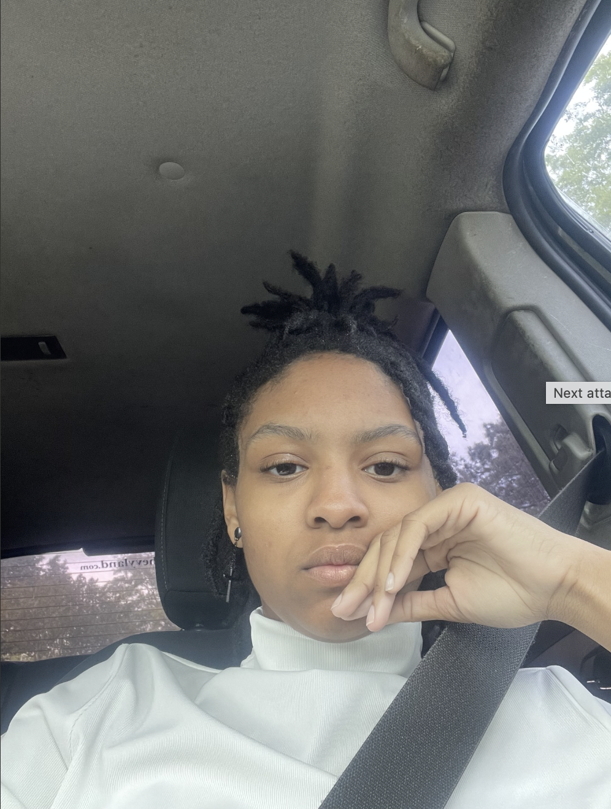

Undergraduate Students

Subash Sapkota
Senior undergraduate student from Nepal, dual major in Biology and Mathematics. Passionate about climate change mitigation using modern technologies.
Research Focus
- Multispectral/hyperspectral remote sensing
- Machine learning in environmental monitoring
Key Projects
Leading LiDAR research analyzing forest stratification.

Rheanna Wesley
Sophomore Biology major at ULM. Current research focuses on stomatal density analysis.
Lab Activities
- Stomatal Density Analysis - Investigating plant pore structures.
Current Initiative
Conducting microscopic analysis of plant stomata structures.
Brock Eppinette
Senior Toxicology major at ULM, specializing in laboratory research methodologies.
Research Focus
- Laboratory technique development
- Toxicology investigation
Current Initiative
Supporting colleagues in advancing toxicology research projects.